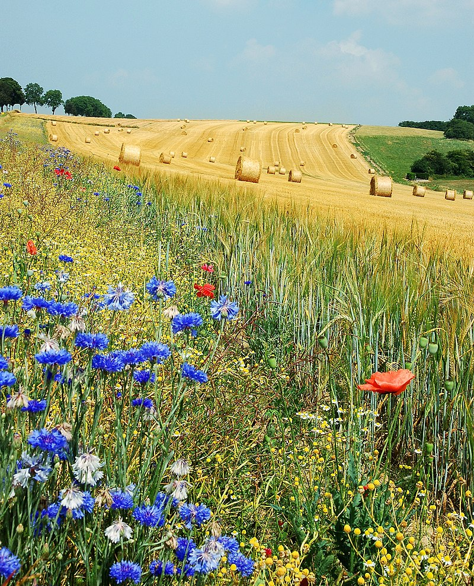

Seasons
Spring
Весна́ — одно из четырёх времён года, переходный сезон между зимой и
летом. Существуют различные методы определения начала и окончания
весны, отличающиеся в зависимости от местного климата, культур и
обычаев. Когда в Северном полушарии весна, то в Южном полушарии осень
и наоборот.
Summer

Ле́то — одно из четырёх времён года, между весной и осенью,
характеризующееся наиболее высокой температурой окружающей среды. В
день летнего солнцестояния дни самые длинные, а ночи самые короткие.
Также в большей части стран лето выступает как самые большие каникулы.
Autumn
Осень (родственно др.-прусск. assanis — «осень», готск. 𐌰𐍃𐌰𐌽𐍃 —
«жатва», этимологически — «время жатвы»; по толкованию Даля — от
«осенять» — затенять: наступление сумрака) — одно из четырёх времён
года, между летом и зимой. Осень — переходный сезон, когда заметно
уменьшение светового дня, и постепенно понижается температура
окружающей среды.
Winter
Зима́ — одно из четырёх времён года, между осенью и весной. Основной
признак этого времени года — устойчивая низкая температура (ниже 0
градусов по Цельсию) во многих районах Земли, на поверхность земли
выпадает и ложится снег. Смена времён года обусловлена наклоном оси
вращения Земли к плоскости эклиптики.